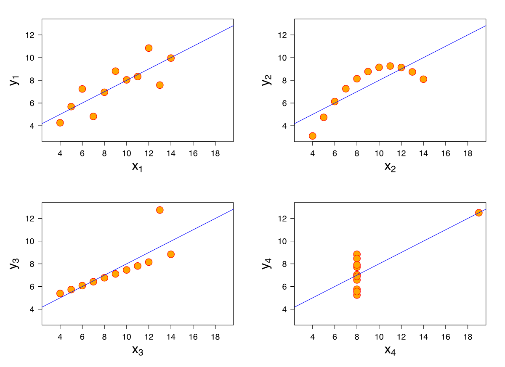

Common Sense Statistics
author: Ignasi Bartomeus date: 2025 autosize: true
Feedback: nacho.bartomeus@gmail.com
Common Sense Statistics
1. Have a question
Know your goal:
- exploratory analysis
- null hypothesis testing
- assessing the plausibility of different models
- interested in the model predictive power
1. Have a question

2. Do not expect statistics to be easy
- Dynamic field
- Opinionated field
- No cookbooks
“If you only have a hammer, all your problems will look like nails”
(but do not overdue it -> statistical machismo)
2. Do not expect statistics to be easy

2. Do not expect statistics to be easy

3. Be aware that statistical analysis can hardly fix a bad experimental design or poorly collected data.
“calling a statistician after the data has been collected is like calling a doctor to do an autopsia”
- Experimenta design
- Sample size
- (Power analysis)
4. Learn about researchers degrees of freedom
- The Garden of forking paths
- p-hacking
- Pre-registration?
5. Always plot your data

5. Always plot your data

6. Understand the statistical test you are performing
- model assumptions
- default parameters
- toy datasets
- interpretation
7. Provide the full details of your statistical analyses.
- Report all test and data manipulation
- Frequentist: P-value, sample size, estimates and associated errors (SE or CI), coefficient of determination (r2), and interpretable effect sizes.
- Do not create Post-hoc hypothesis
- Bayesian CI’s ~ p-values
8. Biological significance > statistical significance

8. Biological significance > statistical significance
Call:
lm(formula = d$values ~ d$treatment)
Residuals:
Min 1Q Median 3Q Max
-5.7940 -1.3562 -0.2033 1.2013 6.0050
Coefficients:
Estimate Std. Error t value Pr(>|t|)
(Intercept) 20.7825 0.2037 102.036 < 2e-16 ***
d$treatmenttreatment -1.0960 0.2880 -3.805 0.000189 ***
---
Signif. codes: 0 '***' 0.001 '**' 0.01 '*' 0.05 '.' 0.1 ' ' 1
Residual standard error: 2.037 on 198 degrees of freedom
Multiple R-squared: 0.06814, Adjusted R-squared: 0.06343
F-statistic: 14.48 on 1 and 198 DF, p-value: 0.00018898. Biological significance > statistical significance

8. Biological significance > statistical significance
Call:
lm(formula = d$values ~ d$treatment)
Residuals:
Min 1Q Median 3Q Max
-6.3779 -2.6385 -0.7762 1.1683 12.5558
Coefficients:
Estimate Std. Error t value Pr(>|t|)
(Intercept) 21.1198 0.4244 49.758 <2e-16 ***
d$treatmenttreatment 0.5667 0.5695 0.995 0.321
---
Signif. codes: 0 '***' 0.001 '**' 0.01 '*' 0.05 '.' 0.1 ' ' 1
Residual standard error: 3.796 on 178 degrees of freedom
Multiple R-squared: 0.005532, Adjusted R-squared: -5.467e-05
F-statistic: 0.9902 on 1 and 178 DF, p-value: 0.3218. Biological significance > statistical significance

9. Practice Open Science and reproducibility
- Document choices (Git)
- Pair programming
- Code review
- Errors are fine as long as are honest and we catch them.
Common Sense Stastistics
- Have a question
- Do not expect statistics to be easy
- Be aware that statistical analysis can hardly fix a bad experimental design or poorly collected data
- Learn about researchers degrees of freedom
- Always plot your data
- Understand the statistical test you are performing
- Provide the full details of your statistical analyses
- Biological significance > statistical significance
- Practice Open Science and reproducibility
Class structure
- There are lots of online R courses and books
- Here we come to make mistakes
- Here we come to solve problems
- Here we come to discuss
Aims
- Learn you can do anything with R.
- Know how to google it.
- Lose the respect for R.
Why R?
R has simple and obvious appeal. Through R, you can sift through complex data sets, manipulate data through sophisticated modeling functions, and create sleek graphics to represent the numbers, in just a few lines of code…R’s greatest asset is the vibrant ecosystem has developed around it: The R community is constantly adding new packages and features to its already rich function sets.
Is R always the right tool?
No always. Limitations: - Learning curve; inconsistent syntax - Fragmented documentation (?help, vignettes, etc…) - Quality of packages is heterogeneous. - Bad with Big Data.
Other tools: - Julia, Python, C++, bash, … - Excel? never.
R: Reproducibilidad
It’s important to make a workflow that you can use time and time again, and even pass on to others in such a way that you don’t have to be there to walk them through it. Source
Your closest collaborator is you 6 months ago, and you don’t respond to emails. P. Wilson
Interested: read our paper
Resources
- StackOverflow
- How do I ask a good question?
- Google (e.g. error message + r)
- Style: mine link; google: Link